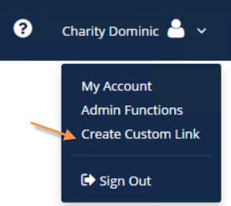
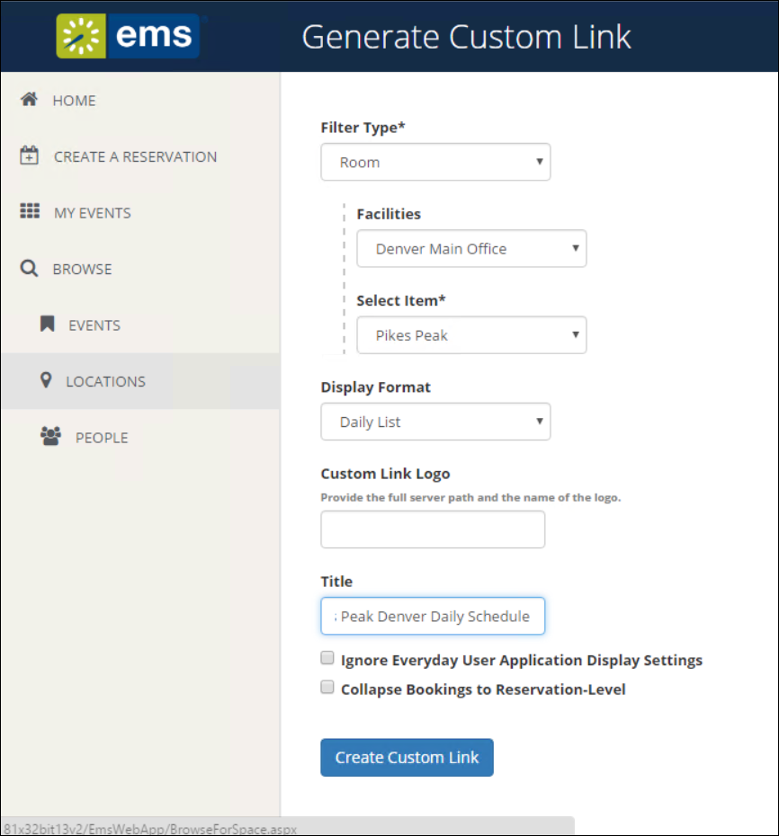
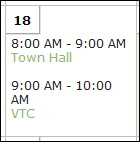

After you have installed the EMS Web App, you can customize many aspects of it. You can change the look and feel of the EMS Web App by inserting your own logo. Experienced web developers can also modify the system’s style sheet to change fonts and colors.
IMPORTANT: Do not alter any of the EMS Web App web page files themselves. The maintenance agreement for EMS Web App extends to the original page content only.
This topic provides information on the following:
The logo that appears in the upper left corner of all pages within the EMS Web App comes from a file named LOGO.GIF found in the \EMSWebApp\Images folder of the web server. If you choose to have the system display a different logo, create a new file called CUSTOMLOGO in the same folder (any graphics file type, such as .gif, .png, etc. will suffice). If the system detects CUSTOMLOGO, the system will use that file rather than the default LOGO.GIF file. The advantage of creating the new file instead of simply replacing the LOGO.GIF file is that, in an upgrade to a new version of EMS Web App, the LOGO.GIF file is overwritten whereas CUSTOMLOGO is not. If you create a custom logo file, you may need clear your browser’s cache before you see the new image.
TIP: Be sure to maintain the aspect ratio of 135px wide X 40px high.The system will accept nearly any size logo image, but you should avoid images more than 200 pixels wide and images that are too tall to avoid extra scrolling.
Experienced web developers are can modify the look and feel of EMS Web App using a custom style sheet, which controls fonts and colors throughout the application. To do so:
The EMS Web App Browse Events page allows users to view all events scheduled in EMS that display to everyday users. You have the option to automatically filter this list of events by facility, room, event type, event name or group name as part of a customized Browse Events page. This customized page is referred to as a Custom Link.
TIP: A Custom Link enables you to build a link based on the Browse Events page that will display only events meeting your specified criteria. For example, you can create a link that only displays events in a specific Building or of a specific Event Type. Essentially, the link pre-filters the event listing displayed to a specific building, event type, Group, etc. Once you generate the link, then you can insert it in emails or websites.
To create a Custom Link, follow the steps outlined below.


TIPS: To display a custom logo other than the default logo used for your
Select the Ignore Everyday User Application Display Settings option if you want all events within your criteria to display to users using this link regardless of everyday user display settings (essentially, ignoring configuration rules that would normally hide certain events from view).
Select the Collapse Bookings to Reservation-Level option to collapse booking information so that only the reservation information shows.
| Collapse Bookings to Reservation Level Enabled | Collapse Bookings to Reservation Level Disabled |
|  |
With custom JavaScript, you can extend the functionality of EMS Web App to suit your business needs.
WARNING: Including custom JavaScript on EMS Web App pages can affect performance.
When EMS Web App receives a request for a page, it checks for the existence of a CustomJs folder. If the folder exists, EMS Web App checks for any files that match the name of the page. For instance, on the RoomRequest.aspx page, if there is a file called RoomRequest.js in the CustomJs folder, EMS Web App will include the RoomRequest.js file on the page.
In addition to the name-matched file, EMS Web App will also check for and include the file named global.js on EVERY page.
Perform the following steps to enable Custom JavaScript:
TIP FOR EMS CLOUD CUSTOMERS: Modifications to the web.config file must be performed by EMS Cloud Operations. To request these changes, please contact EMS Support.
<add key="allowCustomJs" value="false" />
You are now ready to implement your Custom JavaScript using one of several options:
Your custom JavaScript should be included on global.js or on each of the applicable page-specific JavaScript files.
WARNING: If you include the script in both places, it could cause problems.